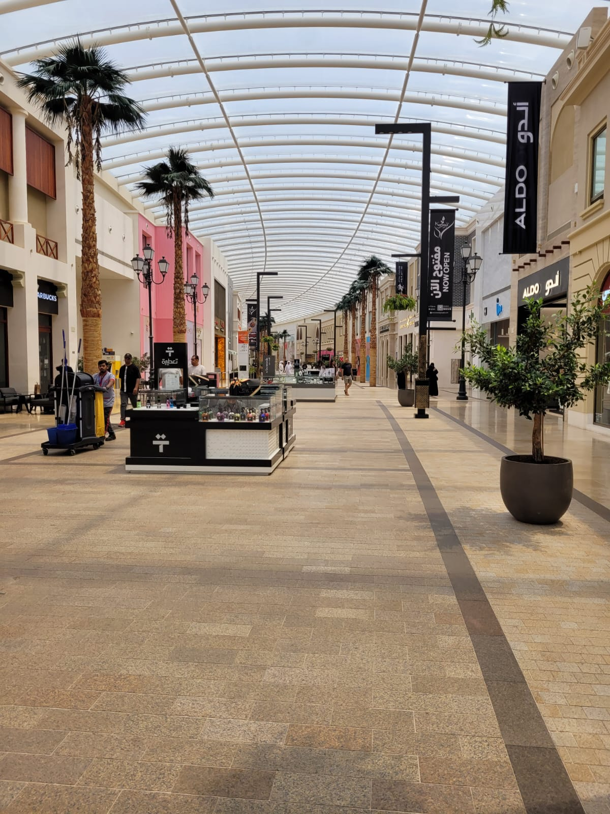
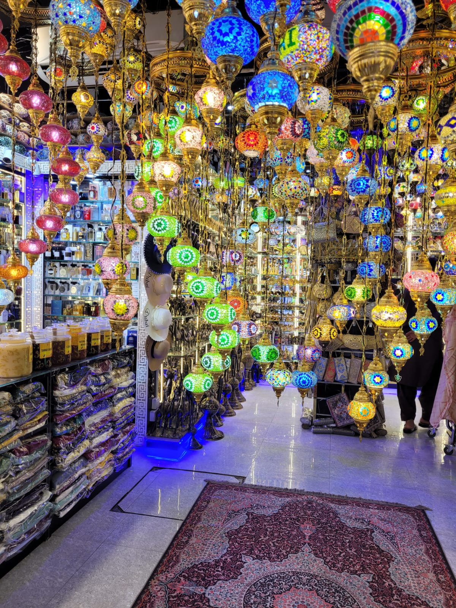
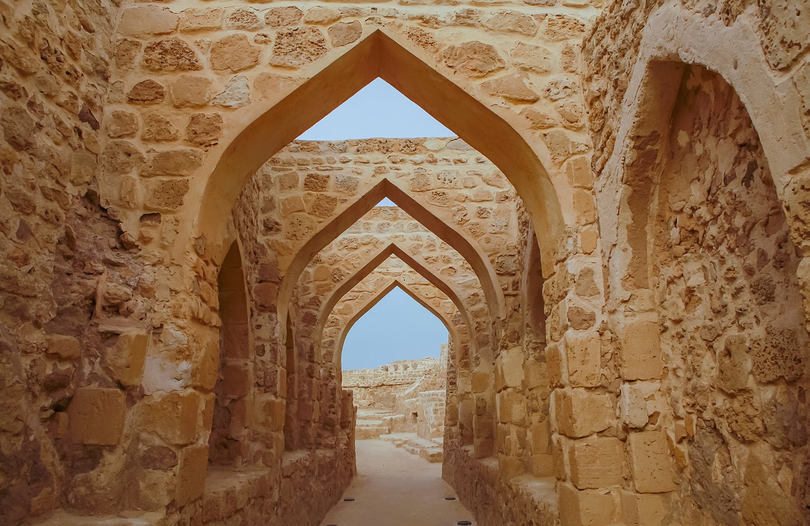

¿Qué saber antes de ir a Bahrain de vacaciones?
Echa un vistazo al visado, principales atracciones, divisa y cultura.
El Visado
Para entrar en Bahrain se requiere de visado, a menos que el turista provenga de uno de los países exemptos de este. Como los países dentro del Consejo de Cooperación para los Estados Árabes del Golfo (CCEAG).
- Baréin
- Kuwait
- Arabia Saudita
- Emiratos Árabes Unidos
- Catar
01
¿Qué hacer en Bahrain?
Bahrain, una joya insular en el corazón del Golfo Pérsico, es un destino que ofrece una amalgama fascinante de tradición y modernidad. Aunque es conocido por sus rascacielos centelleantes y su industria petrolera, Bahrain también es rico en historia. Al pisar Bahrain, uno de los primeros lugares que captura la atención es Manama, su vibrante capital. La ciudad es un hervidero de actividades, desde sus souqs tradicionales, como el Manama Souq, hasta la moderna Corniche de Al Fateh. A un corto trayecto se encuentra el histórico Fuerte de Bahrain, testigo de las diversas civilizaciones que han dejado su huella en el país. No podemos hablar de Bahrain sin mencionar su legado como centro de comercio de perlas. Durante siglos, los buceadores se sumergieron en las aguas cristalinas del Golfo en busca de estas gemas pristinas. Hoy, el "Sendero de las Perlas" es una experiencia turística única, donde los visitantes pueden revivir esa época dorada. Para los amantes de la velocidad, el Circuito Internacional de Bahrain es una parada obligada. Hogar del Gran Premio de Fórmula 1 de Bahrain, el circuito brinda una adrenalina inigualable para los aficionados al automovilismo. Y después de un día lleno de aventuras, ¿qué mejor que degustar la gastronomía local? Bahrain ofrece una cocina rica y variada, donde los sabores árabes se mezclan con influencias persas y del subcontinente índio. Pero más allá de sus atracciones, lo que realmente define a Bahrain es su gente. Hospitalaria, amigable y orgullosa de su herencia, la población local da la bienvenida a los visitantes con los brazos abiertos, deseosa de compartir las maravillas de su país. En resumen, Bahrain es un mosaico de experiencias que promete encantar a todo aquel que decida descubrirlo. ¡Ven y déjate seducir por este paraíso del Golfo!

Avenues Mall
El Avenues Mall en Bahréin es mucho más que un simple centro comercial; representa una experiencia de compras y entretenimiento inigualable en el corazón del Golfo Pérsico. Ubicado a orillas del mar, este complejo ofrece panorámicas deslumbrantes del agua, brindando un ambiente tranquilo mientras te adentras en sus elegantes pasillos al aire libre. Con un diseño arquitectónico moderno, el mall cuenta con más de 200 tiendas que incluyen marcas de lujo internacionales, exquisitos restaurantes y opciones de entretenimiento para todos. Más allá de las compras, los visitantes pueden deleitarse con actividades al aire libre gracias a su ubicación costera y magníficas terrazas. La variedad culinaria abarca desde delicias locales hasta platos internacionales. Sin duda, el Avenues Mall es una parada esencial para cualquier turista en Bahrain, ofreciendo una mezcla perfecta de cultura, compras y vistas espectaculares. ¡Un destino que no puedes perderte!
Manama Souq
El "Manama Souq" en Bahrain es un laberinto de calles estrechas y bulliciosas, donde la tradición y la modernidad se entrelazan armoniosamente. Situado en el corazón de la capital, este souq tradicional es un testimonio viviente de la rica historia y cultura de Bahrain. Al recorrerlo, te encontrarás con puestos que ofrecen desde exquisitas especias, perfumes árabes y joyería hecha a mano, hasta ropa moderna y gadgets electrónicos. El aroma de oud flota en el aire, guiando a los visitantes a través de un viaje sensorial. Los comerciantes locales, con su hospitalidad característica, están siempre dispuestos a compartir historias o regatear, haciendo de cada compra una experiencia única. El Manama Souq no es solo un lugar de compras, sino una ventana al alma de esta ciudad.. ¡Un lugar único para empaparse de la cultura autóctona!


Fuerte de Bahrain
También conocido como Qal'at al-Bahrain, es una joya histórica situada en las afueras de Manama. Este imponente fuerte, declarado Patrimonio de la Humanidad por la UNESCO, ha sido testigo del paso de diversas civilizaciones desde hace más de 4.000 años. Al recorrer sus muros de piedra y torreones, uno puede sentir la resonancia del tiempo y la rica historia que albergan. Las excavaciones arqueológicas han desvelado artefactos de la era Dilmun, demostrando la importancia del fuerte como punto comercial y estratégico. Desde sus murallas, los visitantes pueden disfrutar de vistas panorámicas del Golfo Pérsico y de la moderna ciudad de Manama, creando un contraste fascinante entre pasado y presente. Es, sin duda, una visita obligada para cualquier turista en este pequeño país.